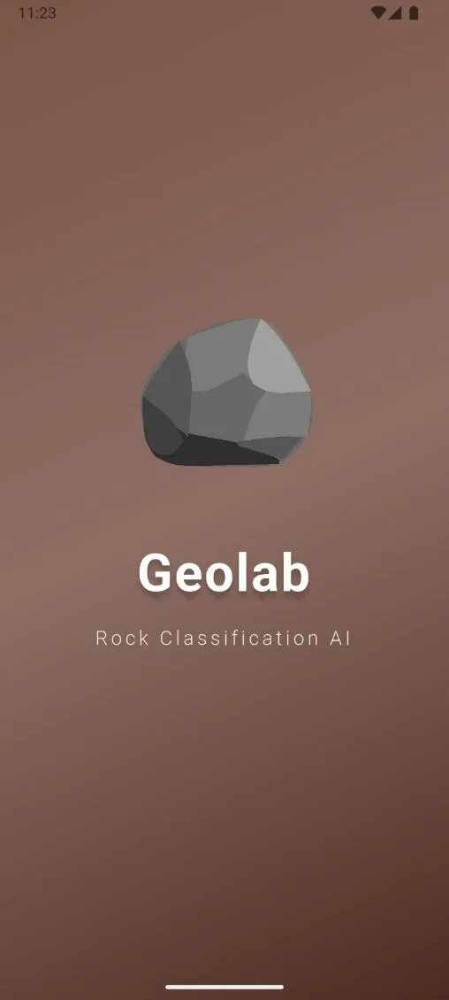
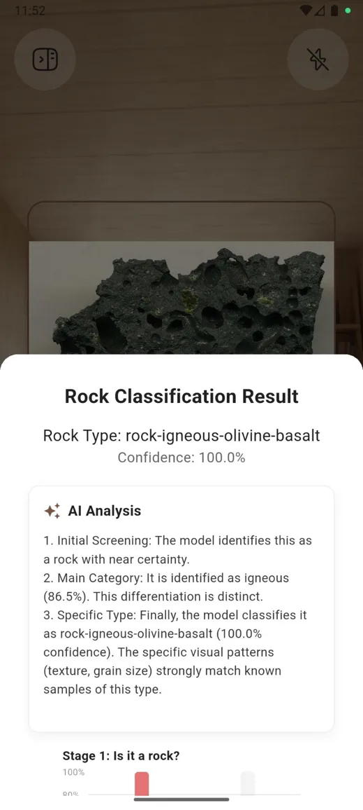
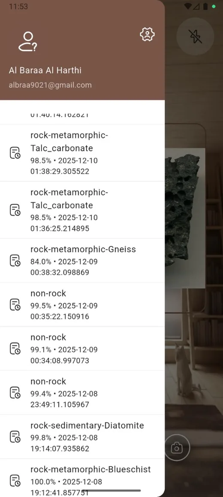

Final‑year project · AI research
Geolab
Point your camera at a rock. Know what it is.
Three models work in stages. The first asks whether it's a rock at all, the next finds the family, and the last names the exact type. Together they reach 95.56% accuracy. I don't trust black boxes, so every result comes with a Grad‑CAM heatmap showing which part of the stone the model looked at. The research behind it was published at ICADAAI 2026.
- EfficientNet‑B7
- ResNet‑50
- Grad‑CAM
- Flask
- Supabase
- Flutter


